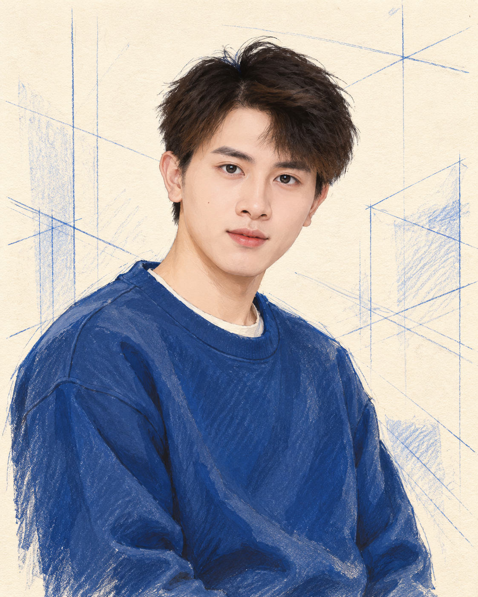
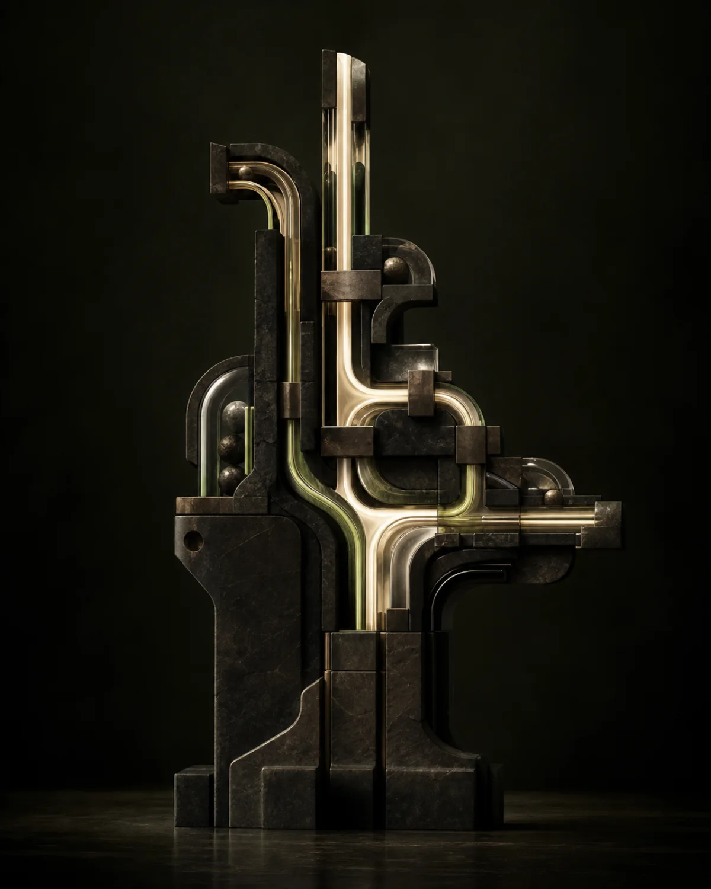

01 / ENGINEERING+
01 / ENGINEERING+从数据库设计，到完整上线。
在武汉泰康科技，参与需求评审、业务表结构和 RESTful API 设计，完成页面联调、测试与部署。用 EXPLAIN、联合索引和查询重构处理慢查询。
查看工程细节 +
编写并调优复杂 SQL，与前端核对页面交互和接口契约，覆盖功能测试、回归测试、部署及问题跟踪。
交付范围 需求评审 → 技术方案 → 数据库设计 → 开发联调 → 测试部署。

保持热情，也把事情做完。
我喜欢有反馈的事情。代码会报错，球会落地，镜头会告诉你哪里拖沓。观察、调整，再试一次，这是我熟悉的节奏。
武汉大学软件工程背景。从后端研发、支付链路到智能体训练，我关心一个想法如何经过设计、协作与验证，成为真正可用的东西。
说清边界，保留测试、日志和回滚。
主动建立连接，把讨论变成行动计划。
整理信息的顺序，让重点被看见。
从业务系统到智能体，
把问题拆清楚，再把每一环接起来。
01 / ENGINEERING+在武汉泰康科技，参与需求评审、业务表结构和 RESTful API 设计，完成页面联调、测试与部署。用 EXPLAIN、联合索引和查询重构处理慢查询。
编写并调优复杂 SQL，与前端核对页面交互和接口契约，覆盖功能测试、回归测试、部署及问题跟踪。
交付范围 需求评审 → 技术方案 → 数据库设计 → 开发联调 → 测试部署。
 02 / PRODUCTION+
02 / PRODUCTION+持续迭代中国帆船帆板运动协会官网，接入支付宝与微信支付。以锁机制、状态机和熔断策略，保障关键交易链路。
围绕高流量场景设计稳定的接口、数据和降级策略，持续承担研发、维护、排障与交付。

 03 / AI AGENTS+VeRL 官方架构参考
03 / AI AGENTS+VeRL 官方架构参考基于 Verl 重写工具调用循环，识别 Python Markdown 代码块并触发安全执行，以 SFT 与 GRPO 增强垂直领域多步推理。
从模型训练延伸到工具协议、沙箱执行和推理评估，将推理能力接入可执行的智能体系统。
围绕三维人体重建完成虚实融合系统，负责技术路线、团队协作与交付推进，以工程实现验证空间计算方案。
「虚实智联：基于数字孪生的三维人体重建系统」获 2025 年计算机设计大赛中南地区赛一等奖。
查看成果档案 ↗先理解业务和异常路径，再确定验收条件。用测试、日志和页面验收复核结果，把经验整理成可复用的工作流。
让工具参与调研、原型、重构与排障，保留审查和人工验收。
覆盖页面、接口、数据库与部署，完成业务闭环。
把模型的推理能力接入工具、执行环境与评测。
把复杂问题讲清楚，让协作者知道下一步。
技术是主业。球场、训练与镜头，
是我保持状态的另一种方式。
读拍面、看重心，再决定下一步。享受单打的节奏，也重视双打里的补位和默契。
根据恢复调整重量与组数，优先保证动作质量。稳定出勤，认真对待长期状态。
先找故事落点，再选素材、音乐和节奏。愿意删掉喜欢却多余的镜头，让表达更清楚。
记录那些组队、研究和交付的时刻。
点击条目，翻看原始材料。
显示全部 8 项成果
有想法，就聊一聊。
工作邀约、项目协作、技术交流。
期待和你一起，把下一个想法做出来。